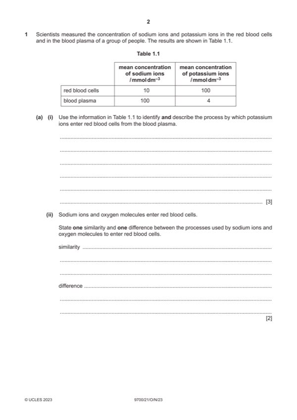

Question 1

Original paper page 2
Part 1(a)(i) — solution
any three from: 3
active transport ; A active uptake
against the concentration gradient ; A use of values to support
using, energy / ATP ;
conformational change / described (of protein carrier) ;
ref. to specific binding site ;
Mark points
- Include the ideas shown in the solution above.
Part 1(a)(ii) — solution
similarity max 1 2
ref. to diffusion / (movement) down concentration gradient ;
passive
or
no, energy / ATP, required ;
difference max 1
sodium ions enter by facilitated diffusion and oxygen molecules enter by (simple) diffusion ;
A passive diffusion
sodium ions, use a carrier / channel / transport, protein ;
or
sodium ions do not, pass through the phospholipid bilayer / cross the hydrophobic core (of the bilayer) ;
A ora for oxygen
2023 Page 7 of 18
9700/21 Cambridge International AS & A Level – Mark Scheme October/November 2023
Mark points
- Include the ideas shown in the solution above.
Part 1(a)(iii) — solution
any two from: 2
hydrogen carbonate ions move out of red blood cells (to be transported in plasma), so / and, chloride ions move in ;
to maintain electrical neutrality (inside, cytoplasm / cell) ;
A balance the charges (either side of membrane)
A to prevent build-up of negative charge (in cytoplasm)
AVP ; e.g. maintain equilibrium to increase reaction between carbon dioxide and water
Mark points
- Include the ideas shown in the solution above.
Part 1(b) — solution
endocytosis / pinocytosis ; A bulk transport 1
Mark points
- Include the ideas shown in the solution above.